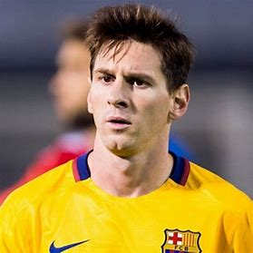
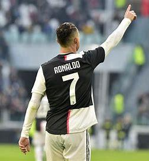
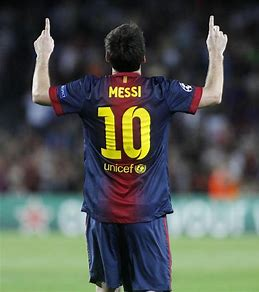

Thank you for viewing our website,what we want to show is the Score comparison between Messi and Ronaldo in
the
Champions League.Our page is showed by five parts:
The first part is on the top.By clicking the left button you can reset the page and the right button can read
this introduction again.
Next is the second part:with the left image is Ronaldo and right image is Messi, bar chart on both sides of
the
center box is telling the number of goals scored after the opening 90 minutes.You can see the details by
hovering over the mouse.By clicking the images,you can see the highlight data about this person.
The third part is mainly the line and bar charts in the middle.The line charts shows the total number of
goals
scored by the two players over time and the bar charts shows the number of goals scored on a specific date.
The forth part is composed of two rose diagrams on the left and right and creative scatter diagrams in the
middle.The rose diagram is showing the scores of specific kicking styles and the scatter diagram is showing
the
corresponding scores in every season. By clicking the specific kicking style,you can see the rest of the
charts
changing accordingly.
The last part of this page is showing jump buttons to another radar chart,you can acquire more information by
clicking.
reset
Score Comparison Between Messi and Ronaldo
introduction
Ronaldo123162 games0.76 goal per game
Messi112134 games0.84 goal per game

Tips: Before checking the visualizations below, clicking on
the button at the top right of the page will help you read a lot


1
1
3
1
8
6
9
4
8
7
12
6
14
10
12
8
17
8
10
10
16
6
12
11
12
6
12
6
2005
2006
2007
2008
2009
2010
2011
2012
2013
2014
2015
2016
2017
2018
2006
2007
2008
2009
2010
2011
2012
2013
2014
2015
2016
2017
2018
2019
Want to know more details? Click the button below and view the ability radar chart of two players annually !